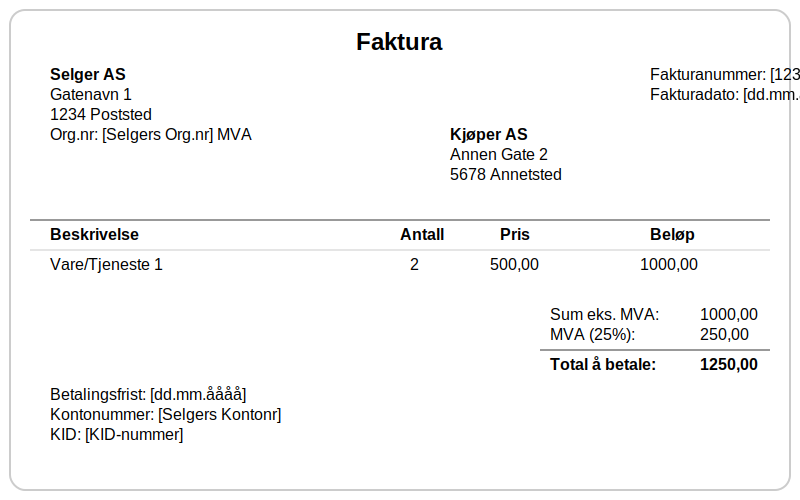
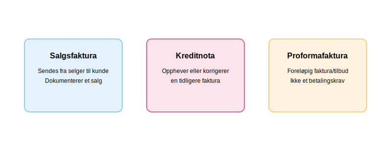

En faktura er et formelt, juridisk bindende dokument som en selger utsteder til en kjøper for å kreve betaling for varer eller tjenester. Den fungerer som et sentralt bilag i regnskapet og er grunnlaget for korrekt bokføring av salgsinntekter og merverdiavgift. En regning er et mer generelt betalingskrav til kjøper, og omtales nærmere i artikkelen Regning.
For en komplett oversikt over moms (merverdiavgift), se Hva er Moms (MVA)?.
Fakturaer dokumenterer salg som utgjør virksomhetens omsetning og er det naturlige sluttresultatet av en tilbudsprosess når kontrakt er inngått og leveranse har funnet sted. Fakturaer spiller også en kritisk rolle i anskaffelsesprosesser, hvor korrekt fakturabehandling er essensielt for god leverandørstyring. For en helhetlig introduksjon til prosessen med å utstede og følge opp fakturaer, se Fakturering.
Mange bedrifter bruker moderne fakturaprogram for å automatisere og effektivisere utsendelse, oppfølging og integrasjon med regnskapssystemet.
Seksjon 1: Fakturaens Anatomi
I Norge er innholdet i en faktura regulert av bokføringsforskriften. For at en faktura skal være gyldig, må den inneholde en rekke obligatoriske opplysninger. Mange bedrifter bruker standardiserte fakturamaler for å sikre at alle lovkrav oppfylles konsekvent og for å fremme profesjonell merkevareidentitet.

Lovpålagte Krav til Innhold:
- Fakturanummer: Et unikt, maskinelt tildelt nummer som er en del av en sammenhengende serie.
- Fakturadato: Datoen fakturaen utstedes.
- Selgers Navn og Virksomhetsnummer: Tydelig identifikasjon av selger. Hvis selger er MVA-registrert, skal “MVA” stå etter virksomhetsnummeret.
- Kjøpers Navn og Adresse: Tydelig identifikasjon av kjøper.
- Beskrivelse av Varen/Tjenesten: En klar og entydig beskrivelse av hva som er levert.
- Tidspunkt og Sted for Levering: Når og hvor varen/tjenesten ble levert.
- Pris og MVA: Beløpet spesifisert i norske kroner, med merverdiavgift angitt i kroner og med gjeldende sats i henhold til mva-loven.
- Totalbeløp: Summen som skal betales.
- Betalingsfrist: Forfallsdato for betalingen.
Seksjon 2: Ulike Typer Fakturaer
Selv om den vanlige salgsfakturaen er mest utbredt, finnes det flere typer fakturaer som brukes i ulike situasjoner. I moderne detaljhandel genereres fakturaer og kvitteringer ofte automatisk gjennom datakasse (kassasystem), som sikrer korrekt dokumentasjon og automatisk integrasjon med regnskapssystemet.

2.1 Salgsfaktura (Sales Invoice)
Dette er den vanligste typen og er et direkte krav om betaling for en levert vare eller tjeneste. Den utløser en inntekt i selgers regnskap og en kostnad i kjøpers regnskap. Når bedrifter selger på kreditt gjennom salgsfakturaer, oppstår det et fakturasalg som krever systematisk oppfølging og risikostyring for å sikre betaling.
I B2B-transaksjoner (Business-to-Business) er salgsfakturaer ofte mer komplekse, med lengre betalingsbetingelser (vanligvis 30-90 dager), detaljerte referansenummer og spesifikke krav til dokumentasjon som kontraktsnummer og leveringsadresser.
For bedrifter som ønsker å eliminere kredittrisiko helt, kan kontantfaktura være et alternativ hvor betaling kreves umiddelbart ved levering.
2.2 Kreditnota (Credit Note)
En kreditnota er en “negativ faktura”. Den utstedes for å korrigere, redusere eller annullere en tidligere sendt faktura. Dette kan være aktuelt ved retur av varer, prisavslag, eller hvis det var en feil i den opprinnelige fakturaen. En kreditnota må alltid henvise til fakturanummeret den korrigerer.
For en detaljert gjennomgang av når og hvordan kreditnotaer brukes, lovkrav, bokføringsregler og beste praksis, se vår omfattende guide til kreditnotaer.
2.3 Proformafaktura (Pro Forma Invoice)
Proformafakturaer er foreløpige fakturaer som ofte benyttes som tilbudsdokumenter og beregningsunderlag. De sendes til kunder for å gi et estimat på kostnader før endelig leveranse. En proformafaktura medfører ikke et betalingskrav og skal ikke bokføres som inntekt eller kostnad i regnskapet.
Hovedtrekk ved proformafaktura:
- Formelt tilbudsdokument: Gir oversikt over forventet pris og leveringsbetingelser
- Ingen regnskapsføring: Skal ikke registreres i hovedbok eller MVA-melding
- Tydelig merking: Skal merkes tydelig med «Proformafaktura» for å unngå forveksling med ordinære fakturaer
- Kan brukes ved eksport: Ofte benyttet for toll- og eksportdokumentasjon
2.4 eFaktura (Elektronisk Faktura)
eFaktura er den elektroniske standarden for fakturautveksling i Norge, som sendes digitalt og behandles automatisk gjennom PEPPOL-nettverket og integrerte regnskapssystemer. Les mer i vår guide til eFaktura.
Seksjon 3: Fakturabehandling og Attestering
Etter at en faktura er mottatt gjennom bilagsmottaket, må den gjennom en kontroll- og godkjenningsprosess før den kan bokføres og betales. Denne prosessen kalles attestering og er en kritisk del av bedriftens internkontroll.
For en detaljert gjennomgang av hele prosessen for inngående fakturaer fra mottak til betaling, inkludert kontrollrutiner, automatisering og beste praksis, se vår omfattende guide.
Kontrollpunkter for Fakturaer
Før en faktura godkjennes, må følgende kontroller utføres:
- Saklig kontroll: Er varen eller tjenesten faktisk levert som beskrevet?
- Regnskapsmessig kontroll: Er fakturaen korrekt kontert og MVA-behandlet?
- Økonomisk kontroll: Er kjøpet innenfor budsjett og fullmakter?
Korrekt attestering av fakturaer sikrer at bedriften kun betaler for varer og tjenester som faktisk er mottatt, og at alle transaksjoner er korrekt dokumentert i regnskapet. For omfattende veiledning om moderne bilagsbehandling, inkludert digitale løsninger og beste praksis, se vår detaljerte guide. Dette er spesielt viktig for å opprettholde god internkontroll og for å tilfredsstille revisors krav til dokumentasjon.
Automatisering av Fakturabehandling
I moderne bedrifter kan mye av fakturabehandlingen automatiseres gjennom fakturatolk-teknologi. Denne teknologien bruker OCR (Optical Character Recognition) og kunstig intelligens for å automatisk lese, tolke og behandle fakturaer, noe som kan redusere behandlingstiden med 80-90% og samtidig minimere menneskelige feil.
Seksjon 4: Betalingsmetoder for Fakturaer
Etter at en faktura er attestert og godkjent, må den betales innen forfallsdato. Det finnes flere betalingsmetoder tilgjengelig for både privatpersoner og bedrifter:
Automatiske Betalingsløsninger
For regelmessige fakturaer kan automatiske betalingsløsninger spare tid og redusere risikoen for forglemmelse:
- AvtaleGiro: Den mest brukte løsningen for automatisk betaling av fakturaer i Norge. Beløpet trekkes automatisk fra bankkonto på forfallsdato.
- eFaktura: Elektronisk faktura som mottas direkte i nettbanken, hvor kunde må godkjenne hver betaling manuelt.
I dag beveger fakturabehandlingen seg stadig mer mot digitale løsninger. Les mer om elektronisk fakturering for å forstå alle de ulike digitale alternativene som finnes for både bedrifter og privatpersoner.
Disse digitale betalingsløsningene er alle deler av det moderne spekteret av betalingstjenester, som omfatter alt fra tradisjonelle bankoverføringer til avanserte API-baserte løsninger. Alle elektroniske betalingstjenester er regulert av betalingstjenestedirektivet (PSD2), som sikrer trygg og innovativ utvikling av digitale betalingsløsninger.
Manuelle Betalingsmetoder
- BankGiro: Tradisjonell betaling via nettbank eller bankkontor med OCR-nummer for automatisk avstemming
- KID-nummer: Betalingsreferanse som automatisk identifiserer og kobler betalinger til riktig kunde eller faktura
- Vipps Regning: Moderne mobilbasert betalingsløsning
Valg av betalingsmetode avhenger av fakturatype, beløpsstørrelse og ønsket kontrollnivå. For faste, regelmessige fakturaer som husleie og forsikringer er AvtaleGiro ofte den mest praktiske løsningen.
Seksjon 5: Fakturagebyr og Tilleggskostnader
I tillegg til hovedbeløpet på fakturaen kan leverandører kreve fakturagebyr for å dekke administrative kostnader ved faktureringsprocessen. Dette er særlig vanlig når kunder velger papirfaktura fremfor elektroniske alternativer.
Vanlige Typer Tilleggsgebyrer
- Papirfakturagebyr: Dekker kostnader for porto, papir og manuell håndtering
- Ekspedisjonsgebyr: For spesielle leveringskrav eller ekstra dokumentasjon
- Purregebyrer: Ved forsinket betaling (regulert av inkassoloven)
Viktig: Alle fakturagebyr må være forholdsmessige, avtalt på forhånd og ikke overstige faktiske kostnader. Leverandører må tilby elektroniske alternativer gratis der det er relevant.
For en detaljert gjennomgang av lovlige rammer, beregning og regnskapsføring av fakturagebyr, se vår omfattende guide til fakturagebyr.
Seksjon 6: Oppfølging av Ubetalte Fakturaer
Når fakturaer ikke betales innen forfallsdato, må bedriften iverksette systematisk oppfølging for å sikre betaling. Dette er en kritisk del av kundeoppfølging og påvirker direkte bedriftens betalingsevne. Et velorganisert kundekartotek er fundamentet for effektiv oppfølging av kundeforhold og betalingshistorikk.
Betalingspåminnelser
Den første og viktigste oppfølgingsmetoden er å sende betalingsoppfordringer. Dette er formelle oppfordringer til betaling som må følge spesifikke juridiske krav:
- Første påminnelse: Sendes vanligvis 30 dager etter forfallsdato med høflig tone
- Andre påminnelse: Strengere formulering med høyere purregebyr
- Tredje påminnelse: Inkluderer trussel om inkasso eller rettslige skritt
Konsekvenser ved Manglende Betaling
Når fakturaer forblir ubetalte, kan dette føre til:
- Forsinkelsesrenter: Lovregulerte renter som påløper fra forfallsdato
- Purregebyrer: Kompensasjon for administrative kostnader ved oppfølging
- Inkassoprosess: Overføring til profesjonelle inkassoselskaper
- Betalingsanmerkning: Offentlig registrering som påvirker kredittverdighet i flere år
- Tap på fordringer: Nedskrivning eller avskrivning av uinnkrevelige beløp
Effektiv oppfølging av forfalte fakturaer er essensielt for å opprettholde god kontantstrøm og minimere tap på fordringer. Les mer om den komplette prosessen i vår guide til betalingsoppfordring.
Seksjon 7: Oppsummering
Fakturaer er selve ryggraden i norsk regnskapsføring og dokumenterer både omsetning, MVA og betaling. For å sikre korrekte og lovlige fakturaer må man:
- Bruke komplett fakturainnhold i henhold til bokføringsforskriften
- Velge riktig fakturatype (salgsfaktura, kreditnota, proformafaktura, eFaktura)
- Implementere god fakturabehandling og attestering for internkontroll
- Tilby effektive betalingsløsninger og følge opp forfalte krav
- Unngå forsinkelsesgebyrer og tap på fordringer ved systematisk oppfølging
God praksis rundt fakturering bidrar til bedre likviditet, overholdelse av lovkrav og et profesjonelt kundeforhold.